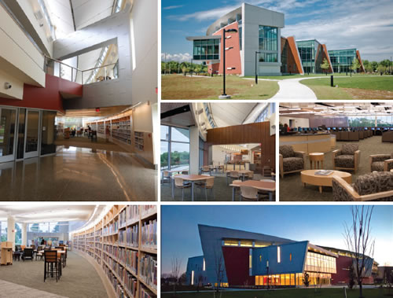

What Libraries Do For Me | |
|
There's a whole world out there, and you and I aren't gonna see most of it. Even the extremely prodigious travelers of our modern world will only catch a glimpse of worn ports and crowded shopping districts, tourist destinations where it's easy to get comfortable and easier to excuse missing that planned excursion for the next round of tapas and a topped-off wine glass. For my fellow citizens, there's a whole country out there we will never see. There's a beauty in small farmhouses, city penthouses, and every space between. From coast to coast there's more love lost between us and the people we'll never meet than the combined love of all our best relationships. There are a 1,000 warm places we would quickly trade to call home, if only we were fortunate enough to sit by their brick hearths soaking up the knowledge of what is instead of what could be. It sounds sad, pessimistic and cynical even. Sure. It sounds like I'm saying we're going to miss out on most of what's worth experiencing. Well, how could we not with such vast splendor and with such great distances between people and places? Sad, but true; as it goes... But, all's not lost. We have hope; we have our wits; we have these miraculous organs incased in strong skulls, which provide the opportunity for intimate experiences with every angel and angelic disposition we'll never actually get to meet: we've our imaginations and plenty of time to exercise 'em! Just as the verisimilitude of time's finiteness increases through age, so too does wisdom provide insight as to how we may optimize each hour, minute, and second we've been gifted. How grand! And here's where the true gift must be acknowledged: public libraries. Sound funny that such gaping holes of experience and human contact might be ameliorated by something as simple as that box of bricks you pass every day, but never find reason to enter? Well, you're not alone. While I was an early explorer of my local community college's library, and while days spent going with my mom to the Central library are burned into every memorial picturebook of my youth, the truth is, I used to talk a lot of shit about libraries. In about my... idk, fourth or fifth? year as an undergrad, I was compelled to take a library science class. One of the most embarassing experiences of my college years was realizing I was on the bad side of an argument regarding the utility of libraries. Granted, it was probably silly to get into a verbal spat with a professor of library science in a library science class about the value of libaries; but, for anyone who knows my general lack of compunction for argument of any form, it probably isn't that surprising. What also shouldn't be surprising to anyone who's held me at bay with sound reasoning is that I quite quickly came to realize how wrong I was. Basically, my argument went like this: "Why should I bother going to the school library when I can just go to Borders and drink banging coffee, read brand new books for free, and then buy (and keep forever) said book should it interest me enough?" Nevermind the fact that within two years Borders would end up going out of business (the only time I actually made out on any of their sales prices), I totally failed to realize just how MUCH modern public libraries (and, to be sure--even more so--college libraries) offer to the curious hearts of our world. |
 |
What Do You Think About Libraries? | |
|
You can probably guess based on the title of this article my general feelings about libaries. But, what do you think? Send me a Tweet or share this article in a Facebook post about what *you* think about libraries. Did you ever see them as useless and come to find them as super valuable? Are you still not that excited about libaries? |
|
Nearly Two Decades of Learning How to Learn | |
|
Getting life in order Getting order in order Selecting classes Work-Life Balance Adapted from Cal Newport's "How to Become a Straight A Student" Study Basics:
Note: It may be necessary to move tasks to future dates based on a conservative time estimate |